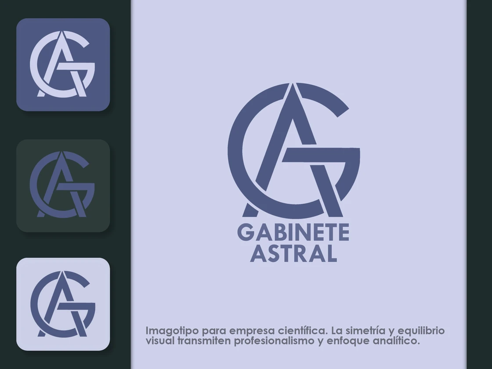
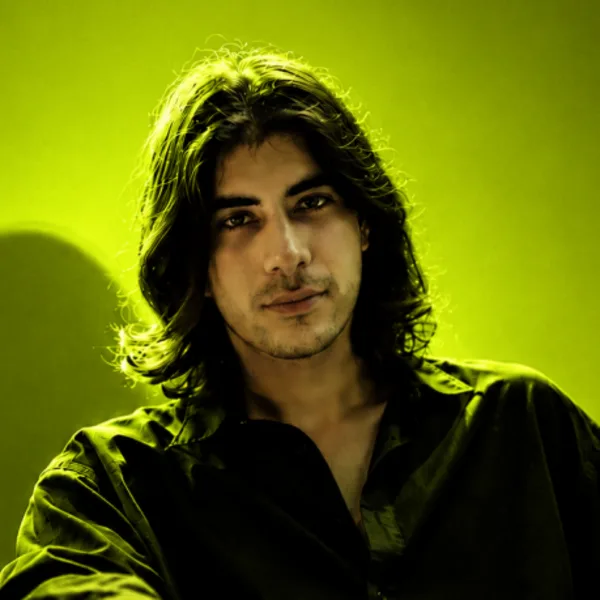
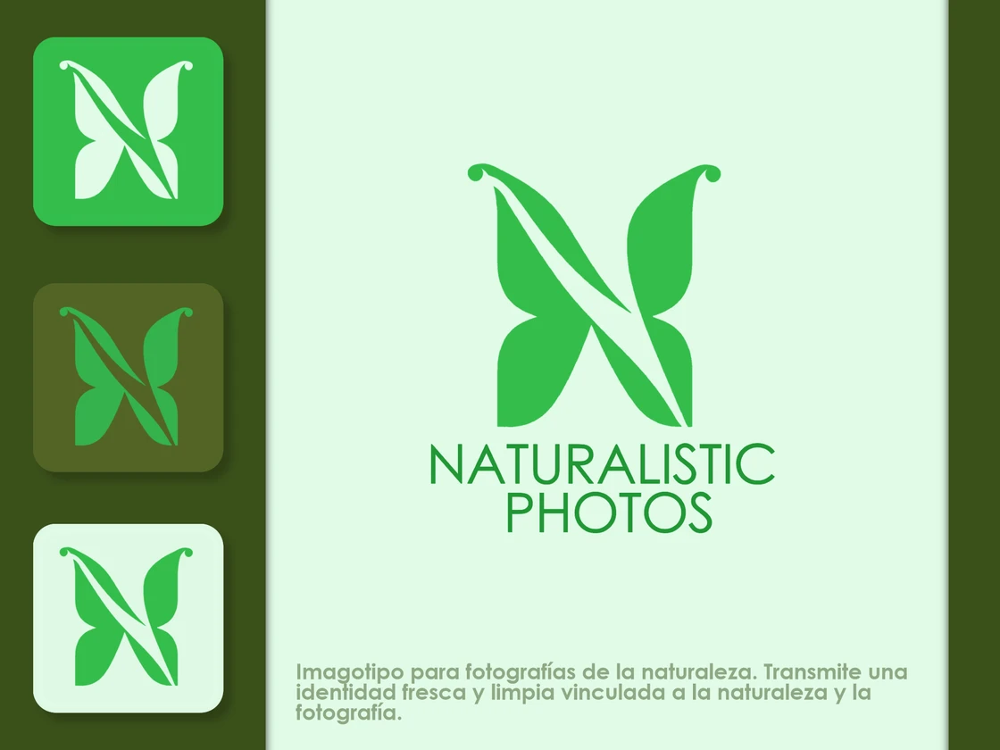
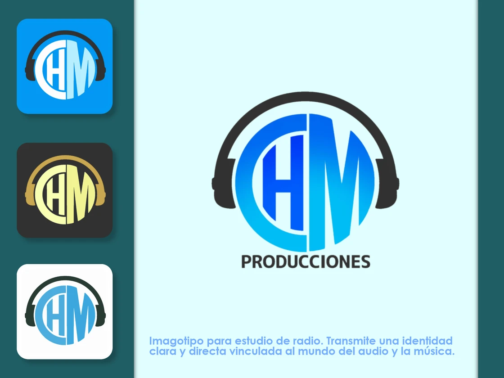
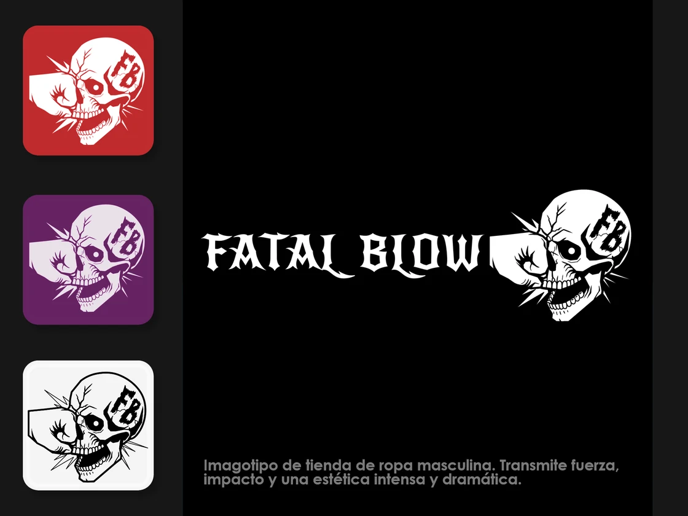
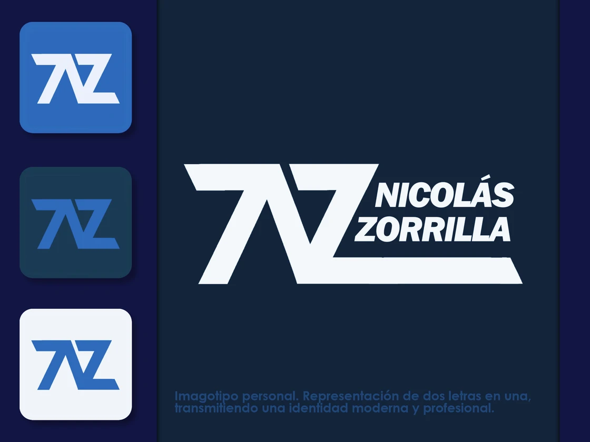
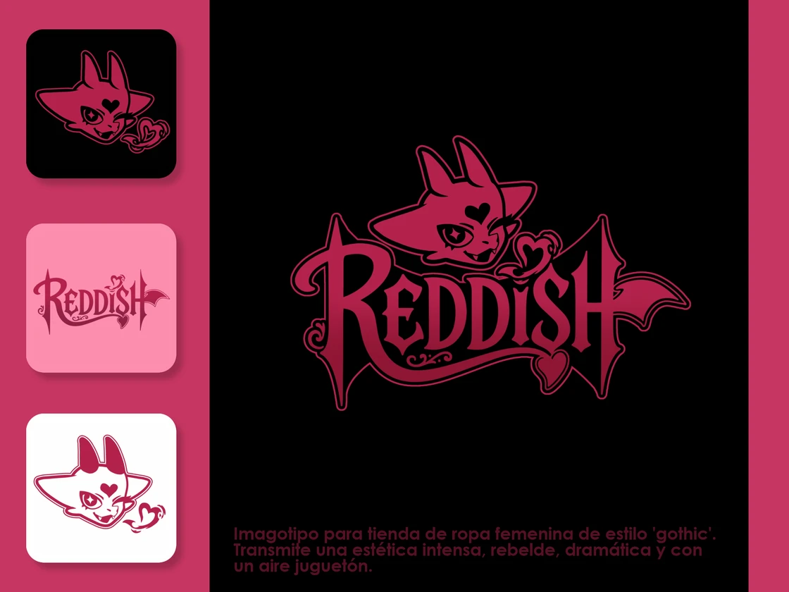
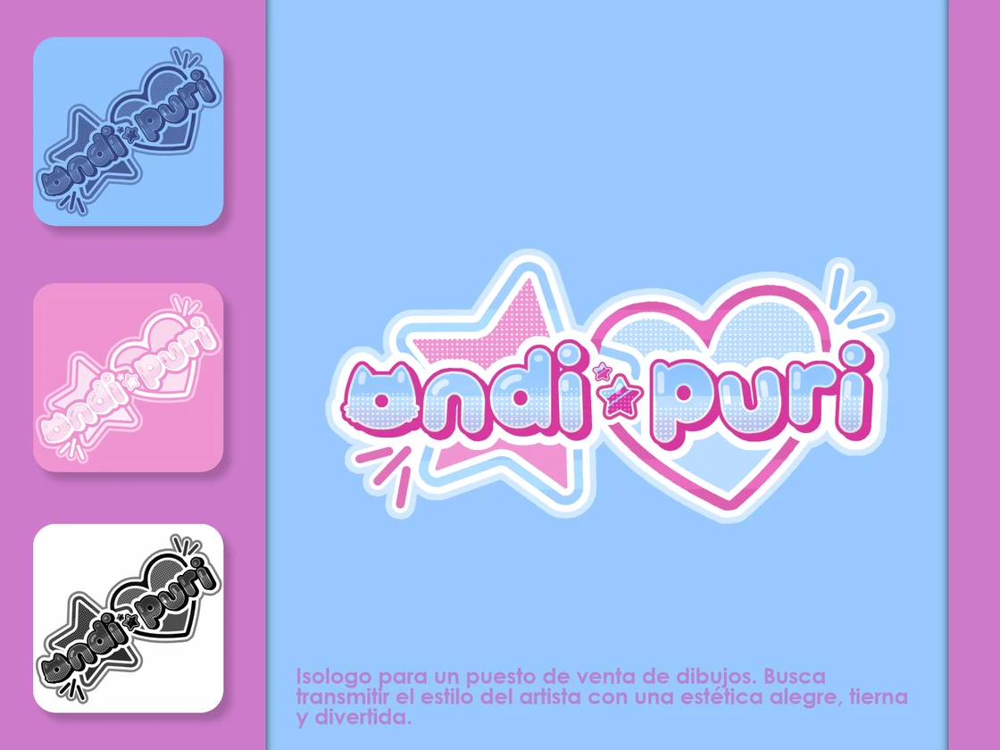
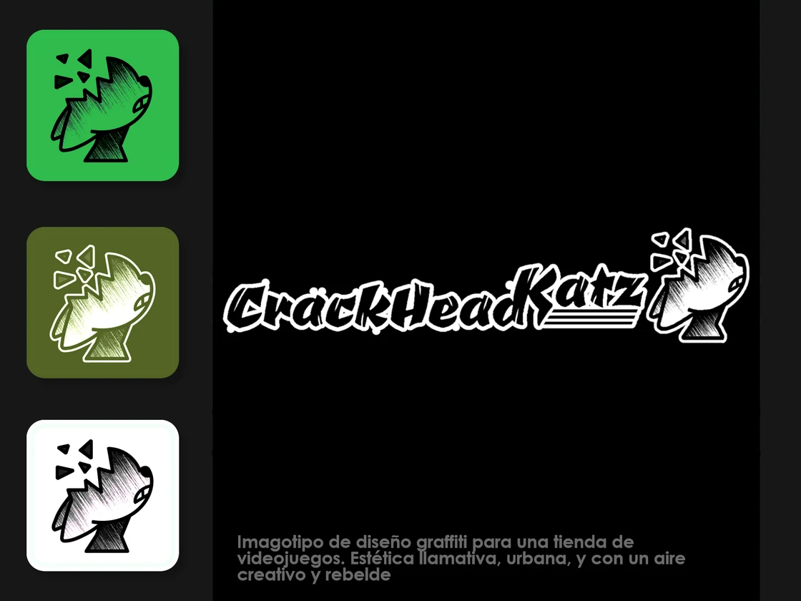

Monograma
Precisión
Corporativo
Abstracción
Portfolio — 2026 · Argentina
Diseñador gráfico, UI/UX Designer y Desarrollador Front-end. Diseño con criterio y front-end que se siente inevitable.

Identidad visual
Donde la creatividad se encuentra con la estrategia de marca.








Desarrollo web
Front-end aplicado a casos reales.
Plataforma de administración de rotisería: lista y sistema de pedidos, ganancias categorizadas y panel de productos y clientes. Diseño responsivo y experiencia optimizada.
Galería interactiva para mostrar dibujos digitales, con filtros por categoría y animaciones suaves. Optimizada para imágenes de alta calidad.
Landing para una cafetería que presenta sus servicios e información a los usuarios de forma clara y directa.
Sitio para una empresa de mates que muestra sus servicios, productos e información con una experiencia cuidada.
Contacto
Creo soluciones web a medida que impulsan el crecimiento de tu marca.